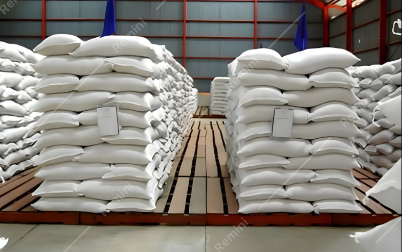

Sistem Pengukuran Kadar Air Beras
Monitoring NanoVNA Real-time

Gudang Penyimpanan - NanoVNA Sensor
Kadar Air (Water Content)
%
Return Loss
-- dB
Status
Menunggu koneksi NanoVNA...
Frequency
-- GHz
VSWR
--
Session ID
--
Measurement ID
--